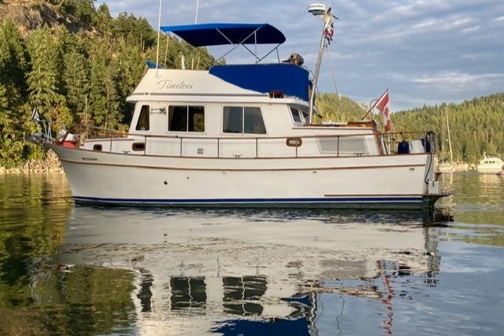

B-Scout Boat Guide · CHBB-34-SE
CHB 34 Sedan
1977–1987
The CHB 34 is a sedan trawler and semi-displacement produced from 1977 to 1987. Typical examples use single inboard, diesel, and shaft. The recorded configuration includes a flybridge, 1 cabin, 4 berths, and 1 head.

- Length
- 33.5 ft
- Beam
- 11.75 ft
- Draft
- 3.5 ft
- Hull behaviour
- Semi-Displacement
- Fuel
- Diesel
- Propulsion
- Shaft
- Engine configuration
- Single Inboard
- Boat family
- Cruiser
- Construction
- Taiwan-built fiberglass hull; early examples commonly include teak-over-plywood decks and extensive exterior teak
Best for
- Affordable classic Taiwan trawler with economical single-diesel operation and broad used-market availability
Trade-offs
- Build quality varies
- wet decks, leaking windows and aging tanks can dominate ownership cost
Known concerns
- No model-specific concern has been promoted to B-Scout’s evidence threshold. This does not mean the model has no age-, condition- or hull-specific risks.
Inspection focus
- Confirm HIN, yard, importer and actual layout
- Moisture-map decks, cabin sides and flybridge
- Inspect windows and exterior teak
- Inspect steel or iron fuel tanks
- Inspect exhaust, shaft, rudder and steering
- Audit electrical and plumbing modifications
Continue researching
Related boat models
CHB 34 Double Cabin Double Cabin
33.5 ft · Semi-Displacement
CHB 34 Tri-Cabin
33.5 ft · Semi-Displacement
CHB 35 Sundeck Sundeck
35 ft · Semi-Displacement
CHB 40 Double Cabin Double Cabin
40 ft · Semi-Displacement
Fortier 33 Downeast Cruiser
33.5 ft · Semi-Displacement
Marine Trader 34 Sedan
33.5 ft · Semi-Displacement
About this record
B-Scout preserves uncertainty: missing information remains unknown rather than being treated as a negative. Specifications and guidance describe the model record; individual boats can differ by year, equipment, refit and condition.